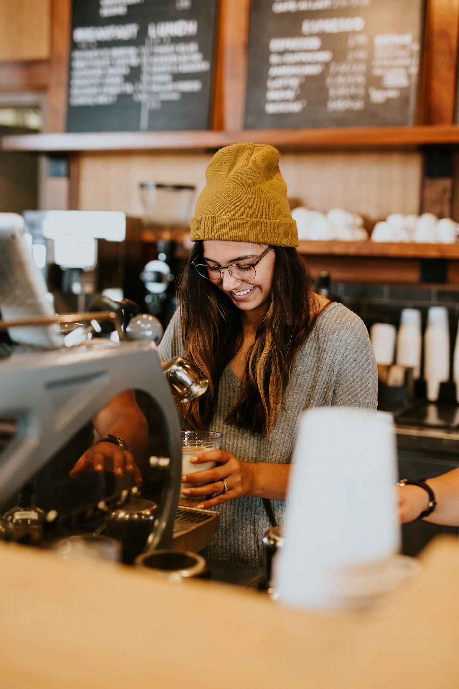
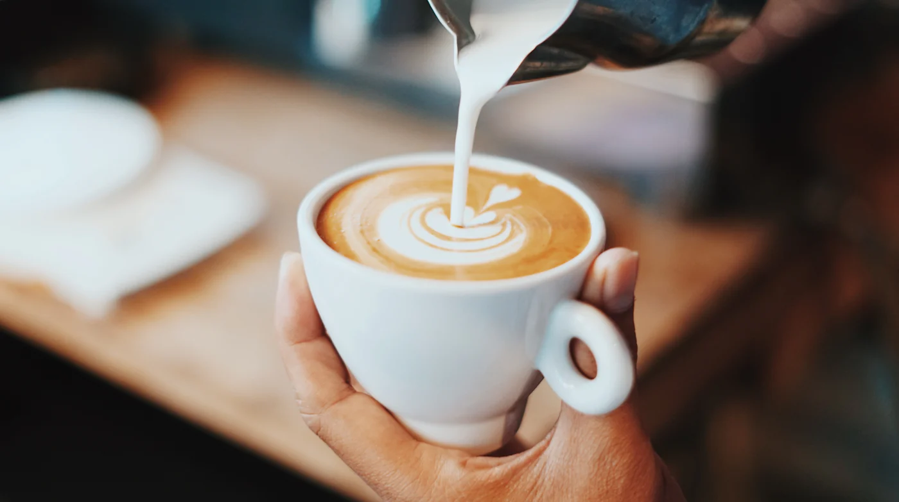
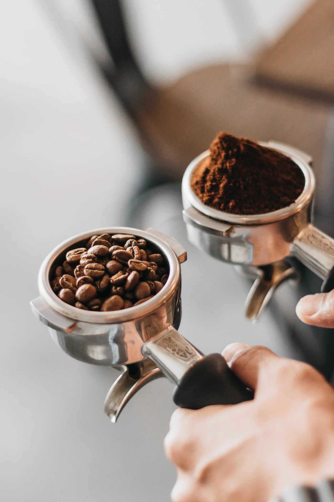
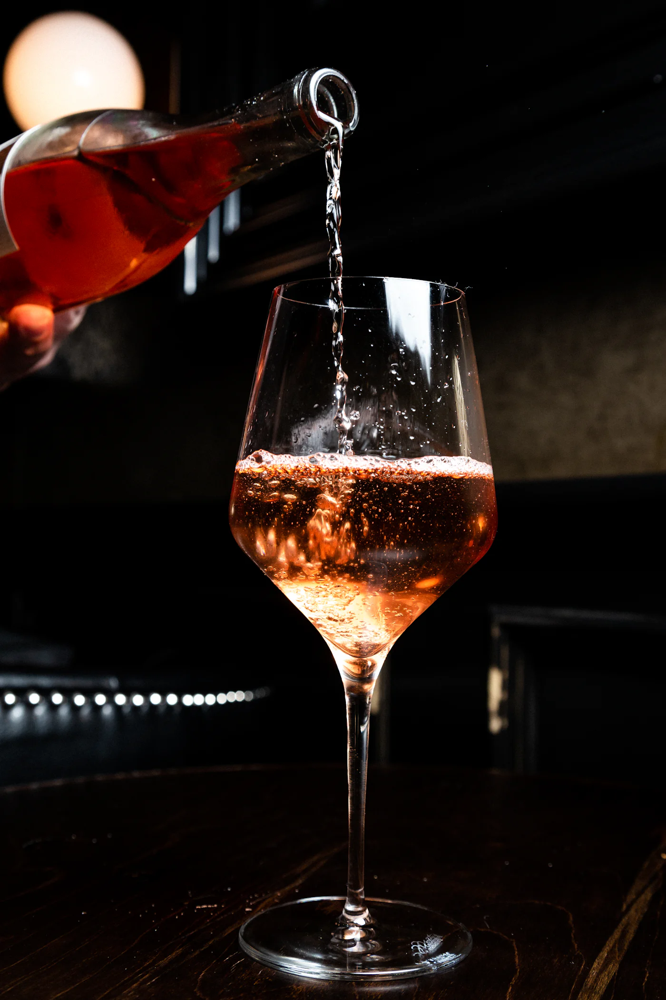
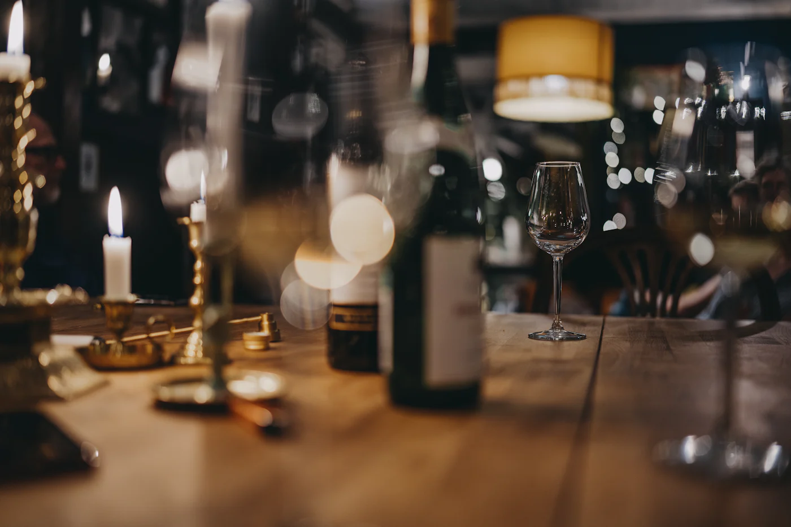

Nappal kávé,este bor.
Szemben a piaccal: reggel hétkor nyitunk espressóval, este a pult mögül pohárra mért bort töltünk. Húzza a napot, és megmutatjuk, mi van akkor nálunk.

A hét kávéja
Etiópia, Guji
Világos pörkölés egy szegedi pörkölőtől. Barack, jázmin és egy kis citrus. Filterként a legjobb, de espressónak is kérhető.
- Pörkölés
- világos
- Elkészítés
- V60, espresso
- Zacskóban
- 250 g · 4 900 Ft
Esti programok
Kedden kvíz, csütörtökön borkóstoló, pénteken jazz. Asztalt kérhet, a hely kevés.



